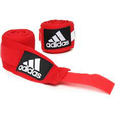

Por que comprar uma bandagem para seus treinos?
A principal função das bandagens é proteger os ossos e tendões das mãos, ajudando a evitar lesões como fraturas e torções. As lesões mais comuns dentro das academias geralmente são provocadas por iniciantes que não fizeram o uso das bandagens de forma correta e terminam um treino de bater saco com as mãos “esfoladas”.
